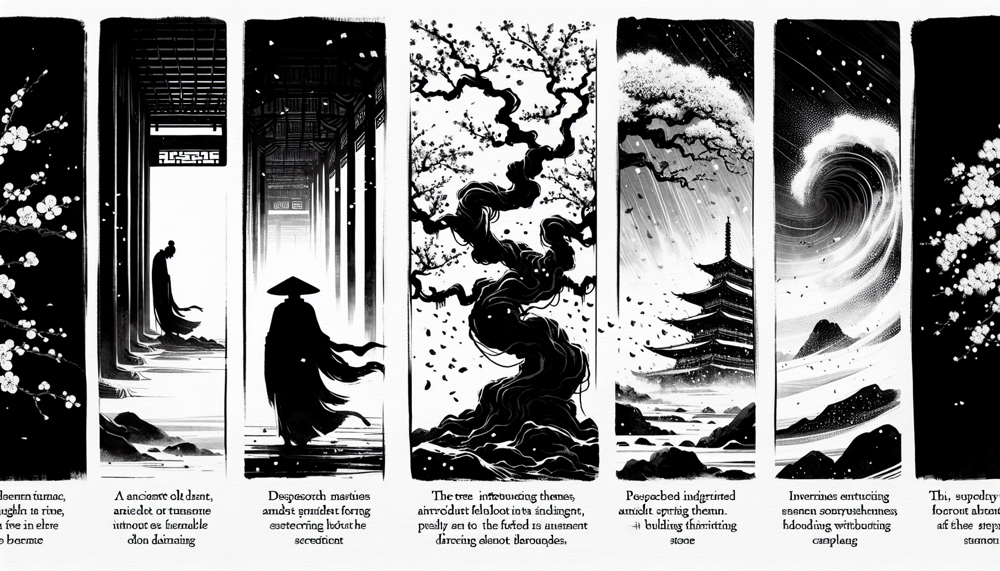

七十五巻 巻一覧
正法眼藏第53 梅花
本ページは tools/gen_web_volumes.py が doc/正法眼蔵.txt から冒頭を抜粋して生成しています。図・詳細解説は今後の手編集で拡張できます。
出典（原文）: https://shomonji.or.jp/zazen/doc/genzou.html
この巻の位置づけ（学習メモ）
道元『正法眼蔵』七十五巻の第53篇「梅花」です。禅籍・経典への引用や語の行間が重なりやすいので、一度ですべてを要約に還元しない読み方を推奨します。問答 Bot では巻スコープにこの題名を含めると応答が安定しやすいことがあります。
語彙の足場
- 題名語：巻題「梅花」は、道元が本章で特に扱う論点の看板です。辞書義だけに固定せず、本文中の用例で意味を確かめます。
- 引用と典故：公案・経文の引用は、一字一句の照応（何に答えているか）を押さえると全体が見えやすくなります。
- 学び方：冒頭だけでも音読し、分からない箇所は印を付けて後から問うとよいです。
本文（冒頭・自動抜粋）
出典はリポジトリ内 doc/正法眼蔵.txt です。原文の参照元: https://shomonji.or.jp/zazen/doc/genzou.html
先師天童古佛者、大宋慶元府太白名山天童景徳寺第三十代堂上大和尚なり。
上堂示衆云、天童仲冬第一句、槎槎牙牙老梅樹。忽開花一花兩花、三四五花無數花。淸不可誇、香不可誇。散作春容吹草木、衲僧箇箇頂門禿。驀箚變怪狂風暴雨、乃至交袞大地雪漫漫。老梅樹、太無端、寒凍摩挲鼻孔酸（上堂の示衆に云く、天童仲冬の第一句、槎槎たり牙牙たり老梅樹。忽ちに開花す一花兩花、三四五花無數花。淸誇るべからず、香誇るべからず。散じては春の容と作りて草木を吹く、衲僧箇箇頂門禿なり。驀箚に變怪する狂風暴雨あり、乃至大地に交袞てる雪漫漫たり。老梅樹、太だ無端なり、寒凍摩挲として鼻孔酸し）。
いま開演ある老梅樹、それ太無端なり、忽開花す、自結果す。あるいは春をなし、あるいは冬をなす。あるいは狂風をなし、あるいは暴雨をなす。あるいは衲僧の頂門なり、あるいは古佛の眼睛なり。あるいは草木となれり、あるいは淸香となれり。驀箚なる神變神怪きはむべからず。乃至大地高天、明日淸月、これ老梅樹の樹功より樹功せり。葛藤の葛藤を結纏するなり。老梅樹の忽開花のとき、花開世界起なり。花開世界起の時節、すなはち春到なり。この時節に、開五葉の一花あり。この一花時、よく三花四花五花あり。百花千花萬花億花あり。乃至無數花あり。これらの花開、みな老梅樹の一枝兩枝無數枝の不可誇なり。優曇華優鉢羅花等、おなじく老梅樹花の一枝兩枝なり。おほよそ一切の花開は、老梅樹の恩給なり。人中天上の老梅樹あり、老梅樹中に人間天堂を樹功せり。百千花を人天花と稱ず。萬億花は佛祖花なり。恁麼の時節を、諸佛出現於世と喚作するなり。祖師本來茲土と喚作するなり。
先師古佛、上堂示衆云、瞿曇打失眼睛時、雪裏梅花只一枝。而今到處成荊棘、却笑春風繚亂吹（瞿曇眼睛を打失する時、雪裏の梅花只だ一枝なり。而今到處に荊棘を成す、却つて笑ふ春風の繚亂として吹くことを）。
いまこの古佛の法輪を盡界の最極に轉ずる、一切人天の得道の時節なり。乃至雲雨風水および草木昆蟲にいたるまでも、法益をかうむらずといふことなし。天地國土もこの法輪に轉ぜられて活鱍鱍地なり。未曾聞の道をきくといふは、いまの道を聞著するをいふ。未曾有をうるといふは、いまの法を得著するを稱ずるなり。おほよそおぼろげの福徳にあらずは、見聞すべからざる法輪なり。
いま現在大宋國一百八十州の内外に、山寺あり、人里の寺あり、そのかず稱計すべからず。そのなかに雲水おほし。しかあれども、先師古佛をみざるはおほく、みたるはすくなからん。いはんやことばを見聞するは少分なるべし。いはんや相見問訊のともがらおほからんや。いはんや堂奥をゆるさるる、いくばくにあらず。いかにいはんや先師の皮肉骨髓、眼睛面目を禮拜することを聽許せられんや。
先師古佛たやすく僧家の討掛搭をゆるさず。よのつねにいはく、無道心慣頭、我箇裏不可也。すなはちおひいだす。出了いはく、不一本分人、要作甚麼。かくのごときの狗子は騷人なり、掛搭不得といふ。
まさしくこれをみ、まのあたりこれをきく。ひそかにおもふらくは、かれらいかなる罪根ありてか、このくにの人なりといへども、共住をゆるされざる。われなにのさいはひありてか、遠方外國の種子なりといへども、掛搭をゆるさるるのみにあらず、ほしきままに堂奥に出入して尊儀を禮拜し、法道をきく。愚暗なりといへども、むなしかるべからざる結良緣なり。先師の宋朝を化せしとき、なほ參得人あり、參不得人ありき。先師古佛すでに宋朝をさりぬ、暗夜よりもくらからん。ゆゑはいかん。先師古佛より前後に、先師古佛のごとくなる古佛なきがゆゑにしかいふなり。
しかあれば、いまこれを見聞せんときの晩學おもふべし、自餘の諸方の人天も、いまのごとくの法輪を見聞すらん、參學すらんとおもふことなかれ。雪裏梅花は一現の曇花なり。ひごろはいくめぐりか我佛如來の正法眼睛を拜見しながら、いたづらに瞬目を蹉過して破顔せざる。而今すでに雪裏の梅花まさしく如來の眼睛なりと正傳し、承當す。これを拈じて頂門眼とし、眼中睛とす。さらに梅花裏に參到して梅花を究盡するに、さらに疑著すべき因緣いまだきたらず。これすでに天上天下唯我獨尊の眼睛なり、法界中尊なり。
しかあればすなはち、天上の天花、人間の天花、天雨曼陀羅華、摩訶曼陀羅花、曼殊沙花、摩訶曼殊沙花および十方無盡國土の諸花は、みな雪裏梅花の眷屬なり。梅花の恩徳分をうけて花開せるがゆゑに、百億花は梅花の眷屬なり、小梅花と稱ずべし。乃至空花地花三昧花等、ともに梅花の大小の眷屬群花なり。花裡に百億國をなす、國土に開花せる、みなこの梅花の恩分なり。梅花の恩分のほかは、さらに一恩の雨露あらざるなり。命脈みな梅花よりなれるなり。
ひとへに嵩山少林の雪漫漫地と參學することなかれ。如來の眼睛なり。頭上をてらし、脚下をてらす。ただ雪山雪宮のゆきと參學することなかれ、老瞿曇の正法眼睛なり。五眼の眼睛このところに究盡せり。千眼の眼睛この眼睛に圓成すべし。
まことに老瞿曇の身心光明は、究盡せざる諸法實相の一微塵あるべからず。人天の見別ありとも、凡聖の情隔すとも、雪漫漫は大地なり、大地は雪漫漫なり。雪漫漫にあらざれば盡界に大地あらざるなり。この雪漫漫の表裏團圝、これ瞿曇老の眼睛なり。
しるべし、花地悉無生なり、花無生なり。花無生なるゆゑに地無生なり。花地悉無生のゆゑに、眼睛無生なり。無生といふは無上菩提をいふ。正當恁麼時の見取は、梅花只一枝なり。正當恁麼時の道取は、雪裏梅花只一枝なり。地花生生なり。
これをさらに雪漫漫といふは、全表裏雪漫漫なり。盡界は心地なり、盡界は花情なり。盡界花情なるゆゑに、盡界は梅花なり。盡界梅花なるがゆゑに、盡界は瞿曇の眼睛なり。而今の到處は、山河大地なり。到事到時、みな吾本來茲土、傳法救迷情、一花開五葉、結果自然成の到處現成なり。西來東漸ありといへども、梅花而今の到處なり。
而今の現成かくのごとくなる、成荊棘といふ。大枝に舊枝新枝の而今あり、小條に舊條新條の到處あり。處は到に參學すべし、到は今に參學すべし。三四五六花裏は、無數花裏なり。花に裏功徳の深廣なる具足せり、表功徳の高大なるを開闡せり。この表裏は、一花の花發なり。只一枝なるがゆゑに、異枝あらず、異種あらず。一枝の到處を而今と稱ずる、瞿曇老漢なり。只一枝のゆゑに、附囑嫡嫡なり。
このゆゑに、吾有の正法眼藏、附囑摩訶迦葉なり。汝得は吾髓なり。かくのごとく到處の現成、ところとしても大尊貴生にあらずといふことなきがゆゑに、開五葉なり、五葉は梅花なり。このゆゑに、七佛祖あり。西天二十八祖、東土六祖、および十九祖あり。みな只一枝の開五葉なり、五葉の一枝なり。一枝を參究し、五葉を參究しきたれば、雪裏梅花の正傳附囑相見なり。只一枝の語脈裏に轉身轉心しきたるに、雲月是同なり、谿山各別なり。
しかあるを、かつて參學眼なきともがらいはく、五葉といふは、東地の五代と初祖とを一花として、五世をならべて、古今前後にあらざるがゆゑに五葉といふと。この言は、擧して勘破するにたらざるなり。これらは參佛參祖の皮袋にあらず、あはれむべきなり。五葉一花の道、いかでか五代のみならん。六祖よりのちは道取せざるか。小兒子の説話におよばざるなり。ゆめゆめ見聞すべからず。
先師古佛、歳旦上堂曰、元正啓祚、萬物咸新。伏惟大衆、梅開早春（元正祚を啓き、萬物咸く新たなり。伏して惟れば大衆、梅、早春に開く）。
しづかにおもひみれば、過現當來の老古錐、たとひ盡十方に脱體なりとも、いまだ梅開早春のみちあらずは、たれかなんぢを道盡箇といはん。ひとり先師古佛のみ古佛中の古佛なり。
その宗旨は、梅開に帶せられて萬春はやし。萬春は梅裏一兩の功徳なり。一春なほよく萬物を咸新ならしむ、萬法を元正ならしむ。啓祚は眼睛正なり。萬物といふは、過現來のみにあらず、威音王以前乃至未來なり。無量無盡の過現來、ことごとく新なりといふがゆゑに、この新は新を脱落せり。このゆゑに伏惟大衆なり。伏惟大衆は恁麼なるがゆゑに。
先師天童古佛、上堂示衆云、一言相契、萬古不移。柳眼發新條、梅花滿舊枝（一言相契すれば萬古不移なり。柳眼新條を發き、梅花舊枝に滿つ）。
いはく百大劫の辨道は、終始ともに一言相契なり。一念頃の功夫は、前後おなじく萬古不移なり。新條を繁茂ならしめて眼睛を發明する、新條なりといへども眼睛なり。眼睛の他にあらざる道理なりといへども、これを新條と參究す。新は萬物咸新に參學すべし。梅花滿舊枝といふは、梅花全舊枝なり、通舊枝なり。舊枝是梅花なり。たとへば、花枝同條參、花枝同條生、花枝同條滿なり。花枝同條滿のゆゑに、吾有正法、附囑迦葉なり。面面滿拈花、花花滿破顔なり。
先師古佛、上堂示大衆云、楊柳粧腰帶、梅花絡臂鞲（先師古佛、上堂して大衆に示すに云く、楊柳腰帶を粧ひ、梅花臂鞲を絡く）。
かの臂鞲は、蜀錦和璧にあらず、梅花開なり。梅華開は、隨吾得汝なり。
波斯匿王、請賓頭盧尊者齋次、王問、承聞、尊者親見佛來。是不（波斯匿王、賓頭盧尊者を請じて齋する次でに、王問ふ、承聞すらくは、尊者親り佛を見來ると。是なりや不や）。
尊者以手策起眉毛示之（尊者、手を以て眉毛を策起して之を示す）。
先師古佛頌云（先師古佛頌して云く）、
策起眉毛答問端、
親曾見佛不相瞞。
至今應供四天下、
春在梅梢帶雲寒。
（眉毛を策起して問端に答ふ、親曾の見佛相瞞ぜず。今に至るまで四天下に應供す、春梅梢に在りて雲を帶して寒し。）
この因緣は、波斯匿王ちなみに尊者の見佛未見佛を問取するなり。見佛といふは作佛なり。作佛といふは策起眉毛なり。尊者もしただ阿羅漢果を證すとも、眞阿羅漢にあらずは見佛すべからず。見佛にあらずは作佛すべからず。作佛にあらずは策起眉毛佛不得ならん。
しかあればしるべし、釋迦牟尼佛の面授の弟子として、すでに四果を證して後佛の出世をまつ、尊者いかでか釋迦牟尼佛をみざらん。この見釋迦牟尼佛は見佛にあらず。釋迦牟尼佛のごとく見釋迦牟尼佛なるを見佛と參學しきたれり。波斯匿王この參學眼を得開せるところに、策起眉毛の好手にあふなり。親曾見佛の道旨、しづかに參學眼あるべし。この春は人間にあらず、佛國にかぎらず、梅梢にあり。なにとしてかしかるとしる、雪寒の眉毛策なり。
先師古佛云、本來面目無生死、春在梅花入畫圖（本來の面目生死無し、春は梅花に在って畫圖に入る）。
春を畫圖するに、楊梅桃李を畫すべからず。まさに春を畫すべし。楊梅桃李を畫するは楊梅桃李を畫するなり、いまだ春を畫せるにあらず。春は畫せざるべきにあらず。しかあれども、先師古佛のほかは、西天東地のあひだ、春を畫せる人はいまだあらず。ひとり先師古佛のみ、春を畫する尖筆頭なり。
いはゆるいまの春は畫圖の春なり、入畫圖のゆゑに。これ餘外の力量をとぶらはず、ただ梅花をして春をつかはしむるゆゑに、畫にいれ、木にいるるなり。善巧方便なり。
先師古佛、正法眼藏あきらかなるによりて、この正法眼藏を過去現在未來の十方に聚會する佛祖に正傳す。このゆゑに眼睛を究徹し、梅花を開明せり。
正法眼藏第五十三
爾時日本國寛元元年癸卯十一月六日在越州吉田縣吉嶺寺深雪參尺大地漫漫
もしおのづから自魔きたりて、梅花は瞿曇の眼睛ならずとおぼえば、思量すべし、このほかに何法の梅花よりも眼睛なりぬべきを擧しきたらんにか、眼睛とみん。そのときもこれよりほかに眼睛をもとめば、いづれのときも對面不相識なるべし、相逢未拈出なるべきがゆゑに。今日はわたくしの今日にあらず、大家の今日なり。直に梅花眼睛を開明なるべし、さらにもとむることやみね。
先師古佛云、
明明歴歴、
梅花影裏休相覓。
爲雨爲雲自古今、
古今寥寥有何極。
（明明歴歴たり、梅花の影裏に相覓むること休みね。雨を爲し雲を爲すこと古今よりす、古今寥寥たり何の極まりか有らん。）
しかあればすなはち、くもをなしあめをなすは、梅花の云爲なり。行雲行雨は梅花の千曲萬重色なり、千功徳なり。自古今は梅花なり。梅花を古今と稱ずるなり。
古來、法演禪師いはく、
朔風和雪振谿林、
萬物濳藏恨不深。
唯有嶺梅多意氣、
臘前吐出歳寒心。
（朔風雪に和して谿林に振ひ、萬物濳し藏るること恨み深からず。唯嶺の梅のみ有りて意氣多し、臘前に吐出す歳寒の心。）
しかあれば、梅花の消息を通ぜざるほかは、歳寒心をしりがたし。梅花小許の功徳を朔風に和合して雪となせり。はかりしりぬ、風をひき雪をなし、歳を序あらしめ、および溪林萬物をあらしむる、みな梅花力なり。
太原孚上座、頌悟道云（悟道を頌するに云く）、
憶昔當初未悟時、
一聲畫角一聲悲。
如今枕上無閑夢、
一任梅花大小吹。
（憶昔る當初未悟の時、一聲の畫角一聲悲なり。如今枕の上に閑なる夢なし、一任す梅花大小に吹くことを。）
孚上座はもと講者なり。夾山の典座に開發せられて大悟せり。これ梅花の春風を大小吹せしむるなり。
図解（4コマ・AI生成）
教義の根拠は本文・出典に従い、漫画は比喩の補助に留めてください。

深掘り（読解のコツ）
- 道元文は定義の羅列に見えても、多くの場合誤解への遮断と正伝の姿勢が背骨になっています。
- 「当体」「現成」「即」などの語が出たら、その巻独自の差別相にどう接続しているかをメモしておくとよいです。